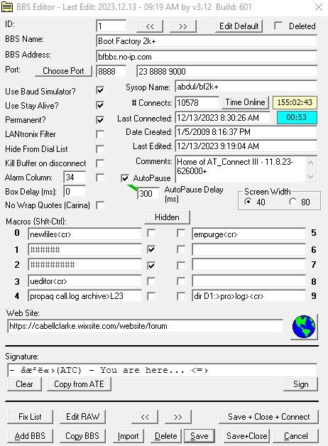
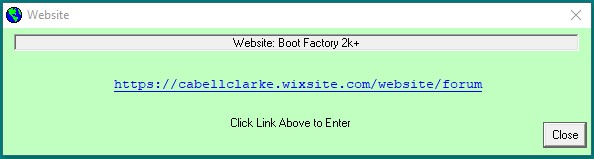
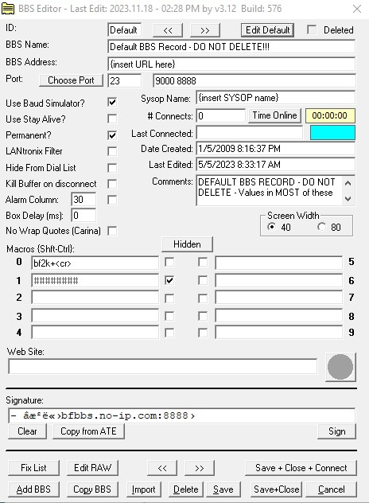

BBS Editor

The BBS Editor is where all of the BBS information for each BBS is stored, edited and manipulated. This data resides in a file called 'AT2_BBS.ini'. AT_Connect currently supports 255 BBS records. The first record in this file is known as the 'Default' BBS record. This can hold any 'global' data such as your name, flags etc. that you want to be copied to any new bbs that is created with the 'Add BBS' function.
There are two (2) ways to get to the BBS Editor:
- Click the
 icon on the toolbar - loads the BBS Editor and displays the first record in the list.
icon on the toolbar - loads the BBS Editor and displays the first record in the list. - Select a BBS on the drop-down list box in the control panel and click the 'Edit BBS' button (also in the control panel).
Labels, Text Boxes, and Macros
The pertinent data for each BBS is displayed in labels and text boxes. Most of these can be edited on this form. Starting from the top:
- ID - the unique record number of the current BBS.
- BBS Name - name of the BBS System.
- BBS Address - the URL or IP address of the BBS (get this from BBS sysop).
- Port - the data port that the BBS uses for incoming connections (get this from BBS sysop). The currently selected port is stored in the left-most Port field and the list of available ports for this BBS can be stored in the right-most field separated by a space between each port as seen here.
- Sysop Name - put the BBS sysops name here (or whatever you like).
- # Connects - # of times you have connected to this BBS (read-only).
- Time Online - the total elapsed time spent on this BBS. Online Timer must be enabled. This is also a button to load the 'Time Online' report.
- Last Connected - date / time of last connection to this BBS (read-only). The time connected for the last connection is displayed here also.
- Date Created - date / time that this BBS record was created (read-only).
- Last Edited - date / time that this record was last edited (read-only).
- Comments - whatever you want to put here.
- Macros - this is where you set up your macros for each BBS. Enter the desired macro into each field (0-9). When connected to this BBS, hitting {shift}-{control} {0|1|...9} or clicking the macro # button will send the associated macro to the BBS.
- NOTE:adding a <cr> anywhere in the macro causes AT_Connect to send an ATASCII carriage return (155) to the BBS when it gets to that point in the macro string.
- Web Site - This field stores the URL of a website you might want to associate with this BBS.
- Signature - Allows you to configure a unique signature for each BBS. It may be created in the ATEditor and copied to the signature field.
- Changed - This label appears when the current BBS record is manually changed by the user. It is a reminder that the current record needs to be saved. When the 'Save' button is clicked, this message will disappear.
Buttons
There are twenty-two buttons on the BBS Editor form. They are:
- '<<' & '>>' - Two of each. These are the 'previous record' and 'next record' buttons which allow you to scroll through the BBS List loading each subsequent or previous record. There is a pair at the top of the form and a pair at the bottom.
- Edit Default - this button loads the 'default' BBS record into the editor form.
- Hidden - Hides / UnHides selected macros via password protection setup in Configuration form. Requires you to enter the system password before hidden macros can be shown or edited.
- Choose Port - this button opens a dialog box allowing you to select the current port from the list of ports for this BBS.
- Save+Close+Connect - the one-click access for saving the current bbs record, closing the BBS Editor, and connecting to the current BBS.
- Save+Close - saves the current record and closes the form.
- Fix List - (Optional - enabled in the Configuration form) Runs a function that checks and repairs the raw BBS list. This optional button can be hidden in the Configuration Form.
- Add BBS - creates a new BBS record from the 'default' BBS record and plugs it into the first available slot (1-255).
- Edit RAW - (Optional - enabled in the Configuration form) Allows raw editing of the BBS list text file.
- NOTE: NOT recommended for amateurs. This optional button can be hidden in the Configuration Form.
- Copy BBS - copies the currently loaded BBS record to a new BBS record.
- Delete - delete the current BBS record. Records marked with the 'Permanent' flag cannot be deleted this way. The permanent flag must be unchecked, the record saved, and then it can be deleted permanently.
- Save - saves the current BBS record.
- Cancel - cancels any changes to the current BBS record and exits the BBS Editor.
- Import - Import BBS record(s) in the future...not yet implemented in AT_Connect v3.10.
- Time Online - Loads the time online report.
- Sign - Sends the signature for this BBS to the connected BBS.
Flags (Check Boxes)
There are nine flags on the BBS Editor form. From top to bottom, they are:
- Deleted - a read-only checkbox that indicates that the current record is deleted.
- Baud Simulator - turns on the Baud Rate simulator for this BBS.
- Stay Alive - turns on Stay Alive mode. NOTE: this mode should be used with BaudSim mode on any BBS that you are viewing break movies or reading large text files in order to keep the BBS inactivity timer from logging you off.
- Permanent - use this flag to ensure that a BBS is not accidentally deleted with the 'Delete' button. You must turn off this flag and save the record before the 'Delete' button will delete the BBS.
- LANtronix Filter - this flag is used if the current BBS is a real Atari running on a LANtronix device for it's internet connection. The LANtronix devices will send an extra character (0) after a ctrl-M (13) which screws up the display. This flag will cause AT_Connect to filter out those extra characters. The very slight performance hit is not noticeable in BaudSim mode.
- Hide From Dial List - This flag allows you to mark a BBS as 'down' which removes it from the drop-down dialup list on the main form control panel without deleting the entry.
- Kill Buffer on Disconnect - Clears the incoming buffer when a BBS disconnects.
- Alarm Column - Enables the right column alarm in the Text Window for BBSes that do not have a word wrap feature in their message editors. Also the column number for the alarm is set here.
- AutoPause - enables the AutoPause system for BBSes that do not have a page length setting (like BBS:Express v1.0)
- AutoPause Delay (ms) - Milli-seconds delay between sending the [A]gain char and the Ctrl-S char. Start around 300 ms.
- Box Delay(ms) - Milli-seconds delay for data being sent from the box to the currently logged on BBS screen.
- No Wrap Quotes - this is an option which is basically for creating quotes on a Carina BBS system. It should be checked for Carina Systems if you want to use it.
- Screen Width - allows you to setup the screen connection width in 40 or 80 columns for this BBS. When you connect to the BBS, the screen width will automatically be adjusted.
Website

 - this button loads the website access form for the current bbs. The website access form is populated with the website of the current bbs either from the BBS Editor or the terminal screen. Clicking the blue underlined link will load your internet browser and connect you to the website.
- this button loads the website access form for the current bbs. The website access form is populated with the website of the current bbs either from the BBS Editor or the terminal screen. Clicking the blue underlined link will load your internet browser and connect you to the website.
The Default BBS Record

The Default BBS is used by AT_Connect to create new BBS records, when the 'Add BBS' button is pressed. Many of the values here can be used as global values and will be copied to the new BBS record when it is created.
Do not attempt to delete this record through 'raw' BBS List editing or the 'Add BBS' button will not function correctly.
You have been warned...